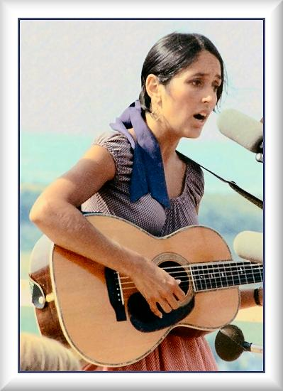
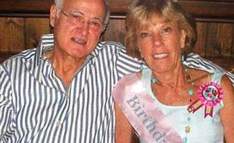
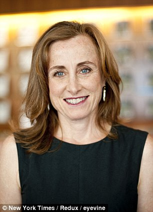
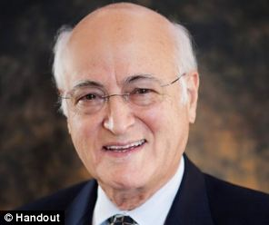
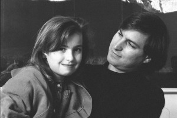

Chương 19

ăm 1982, khi vẫn còn đang làm việc trong nhóm Macintosh, Jobs đã gặp một ca sĩ nhạc đồng quê nổi tiếng - Joan Baez thông qua em gái của bà là Mimi Farina, người đứng đầu một tổ chức từ thiện đang cố gắng để huy động nguồn quyên góp máy tính cho các nhà tù. Một vài tuần sau đó, ông và Baez đã ăn trưa tại Cupertino, ông nhớ lại: "Tôi đã không mong đợi nhiều, nhưng cô ấy thực sự thông minh và hài hước". Vào thời điểm đó, ông đã gần như kết thúc quan hệ với Barbara Jasinski. Họ đã từng cùng nhau đi nghỉ ở Hawaii, ở chung trong một căn nhà ở vùng núi Santa Cruz, và thậm chí đã cùng đến xem một buổi biểu diễn của Baez. Khi mối quan hệ của ông với Jasinski trở nên căng thẳng, Jobs đã bắt đầu nghiêm túc hơn với Baez, ông lúc đó mới hai mươi bảy tuổi trong khi Baez bốn mươi mốt tuổi, tuy vậy, họ đã sống hạnh phúc với nhau trong một vài năm. "Nó đã trở thành một mối quan hệ nghiêm túc giữa hai người bạn tình cờ muốn trở thành người yêu của nhau", Jobs kể lại với một giọng điệu hơi tiếc nuối.

Joan Baez
Elizabeth Holmes, một người bạn của Jobs tại trường cao đẳng Reed, tin rằng một trong những lý do ông hẹn hò với Baez, không phải là vì thực tế rằng cô này xinh đẹp, hài hước và tài năng mà vì cô đã từng là người yêu của Bob Dylan. Bà còn cho biết "Steve yêu sự kết nối đó với Dylan”. Baez và Dylan từng có quan hệ yêu đương vào đầu những năm 1960, và sau đó họ đi lưu diễn với nhau như những người bạn, bao gồm cả chuyến lưu diễn Revue Rolling Thunder vào năm 1975. (Jobs đã có những bản in lậu các buổi hòa nhạc đó.)
Khi gặp Jobs, Baez đã có một đứa con trai mười bốn tuổi, Gabriel, từ cuộc hôn nhân với nhà hoạt động chống chiến tranh David Harris. Có một lần, trong bữa trưa, bà đã nói với Jobs rằng bà đang cố gắng để dạy cho Gabe cách đánh máy. Jobs đã hỏi “Ý chị là trên một máy đánh chữ ư?".
Khi bà ấy nói đúng, ông bảo rằng: "Nhưng máy đánh chữ là đồ lạc hậu rồi."
"Nếu một máy đánh chữ là đò lạc hậu, thì điều đó có ảnh hưởng gì đến tôi không?" Bà hỏi lại. Đã có một khoảng lặng kì cục trong bầu không gian hôm đó. Sau đó, Baez đã nói với tôi, "Ngay khi tôi nói ra điều đó, tôi nhận ra câu trả lời rất rõ ràng. Câu hỏi đó chỉ làm bầu không khí trở nên căng thẳng. Thật khủng khiếp."
Một ngày, trước sự ngỡ ngàng của đội dự án Macintosh, Jobs đã xông vào văn phòng cùng với Baez và cho bà thấy nguyên mẫu của máy Macintosh. Họ đều chết lặng khi thấy ông sắp tiết lộ về chiếc máy tính với một người ngoài cuộc, cho dù ông có một nỗi ám ảnh về việc giữ bí mật, nhưng họ thậm chí càng ngạc nhiên hơn trước sự hiện diện của Joan Baez, ông đã tặng cho Gabe một chiếc Apple II, và sau đó ông đã tặng cho Baez một máy tính Macintosh. Qua những lần đến thăm, Jobs đã khoe với bà về các tính năng mà ông thích. "Cậu ấy là người ngọt ngào và kiên nhẫn, nhưng lại quá uyên bác nên cậu ấy khá vất vả để hướng dẫn cho tôi hiểu", bà nhớ lại.
Ông bỗng nhiên trở thành một tỉ phủ, còn bà là một nhân vật có danh tiếng tầm cỡ thế giới, nhưng lại khá thực tế và không quá giàu có. Bà không biết điều gì đã tạo nên một con người như ông, và vẫn còn cảm thấy khó hiểu khi nói về ông sau gần ba mươi năm. Tại một bữa tối khi họ mới bắt đầu mối quan hệ, Jobs bắt đầu nói chuyện về Ralph Lauren và cửa hàng Polo của ông, bà đã thừa nhận mình chưa bao giờ đến cửa hàng này. "Có một chiếc váy màu đỏ rất hợp với em", ông đã nói vậy, và sau đó đã lái xe đưa bà đến một cửa hàng trong Trung tâm mua sắm Stanford. Baez nhớ lại, "Tôi đã nghĩ thầm, thật lạ lùng và cũng thật tuyệt vời, tôi đang hẹn hò với một trong những người đàn ông giàu nhất thế giới và anh ấy muốn tặng tôi chiếc váy đẹp đẽ này". Khi chúng tôi tới cửa hàng, Jobs đã mua một vài chiếc áo sơ mi cho mình và chỉ cho bà chiếc váy màu đỏ. "Em nên mua nó," ông nói. Bà hơi ngỡ ngàng, và nói với ông rằng bà thực sự không đủ khả năng mua nó.
ông đã im lặng, và họ ra về. Bà hỏi tôi: "Anh có nghĩ rằng nếu ai đó đã thao thao bất tuyệt về về một thứ gì đó suốt cả buổi tối như vậy thì người ta sẽ mua nó cho anh?" bà dường như thực sự bối rối về việc này. "Chiếc váy màu đỏ tưởng như đã nằm trong tầm tay. Tôi cảm thấy hơi lạ về điều này", ông đã tặng bà máy vi tính nhưng lại không tặng một chiếc váy, thậm chí khi ông mang hoa tặng bà, ông còn khẳng định với bà rằng chúng là số hoa còn sót lại từ một sự kiện ở công ty. Bà kể:
“Anh ấy vừa là người lãng mạn vừa là người sợ sự lãng mạn”.
Khi ông đang thực hiện dự án về máy tính NeXT, ông đã đi đến nhà của Baez ở Woodside và khoe với bà về khả năng chơi nhạc vượt trội của nó. "Jobs đã để chiếc máy chơi một bản tứ tấu của Brahms, anh ấy nói với tôi rằng cuối cùng thì máy tính sẽ chơi nhạc còn hay hơn là con người, thậm chí còn có âm bội và nhịp điệu tốt hơn," Baez nhớ lại. Bà đã rất giận về ý tưởng này "Anh ấy thì đang hân hoan với thành quả lao động say mê của mình trong khi tôi đang chìm đắm trong một cơn thịnh nộ và suy tư. Làm sao mà anh ấy có thể làm ô uế âm nhạc như vậy?"
Jobs tâm sự với Debi Coleman và Joanna Hoffman về mối quan hệ của mình với Baez và lo lắng về việc liệu mình có thể kết hôn với một người đã có một cậu con trai tuổi thiếu niên và có lẽ người đó cũng đã qua thời điểm muốn có thêm con. Hoffman đã nói rằng “ Đôi khi Jobs coi bà ấy như là một ca sĩ quá „phức tạp‟ và không phải là một ca sĩ 'chính trực' thực sự như Dylan.” Bà ấy là một người phụ nữ mạnh mẽ, còn ông muốn chứng tỏ mình có quyền kiểm soát. Hơn nữa, lúc nào ông cũng nói rằng ông muốn có một gia đình, và với bà ấy, ông biết rằng đó là việc không thể.” Và như vậy, sau khoảng ba năm, họ đã kết thúc mối tình của mình và trở thành bạn bè. “Tôi đã tưởng rằng tôi yêu cô ấy, nhưng thực sự tôi chỉ thích cô ấy rất nhiều thôi,” sau này ông nói vậy.
"Chúng tôi đã không đến được với nhau. Tôi muốn có con, còn cô ấy thì không muốn sinh thêm bất kỳ đứa con nào nữa". Trong cuốn hòi ký của mình năm 1989, Baez đã viết về sự tan vỡ của bà với chòng cũ và lý do tại sao bà không bao giờ tái hôn: “Tôi không thuộc về ai, từ đầu đã vậy, thỉnh thoảng điều đó lại bị giẤn đoạn như những buổi dã ngoại”, bà đã thêm một nhận định tốt đẹp ở cuối cuốn sách “Steve Jobs đã buộc tôi phải sử dụng một chiếc máy xử lý văn bản bằng cách đặt một chiếc trong bếp nhà tôi”.
Tìm thấy Joane và Mona
Khi Jobs ba mươi mốt tuổi, một năm sau khi bị Apple sa thải, bà Clara, mẹ của ông, một người nghiện thuốc lá, đã mắc bệnh ung thư phổi. Ông dành thời gian bên giường bệnh, trò chuyện với bà theo những cách mà trước đây hiếm khi ông làm, Jobs cũng hỏi mẹ mình một số câu hỏi mà từ trước đến nay ông đã kiềm chế không nói ra. “Khi mẹ và cha kết hôn, mẹ là một trinh nữ phải không?” ông hỏi. Bà gặp khó khăn khi nói chuyện nhưng cũng phải mỉm cười. Đó là lúc bà nói với Jobs rằng trước đó bà đã kết hôn với một người đàn ông đã mãi mãi không bao giờ trở lại từ cuộc chiến tranh. Bà còn kể chi tiết cho Jobs nghe về việc bà và Paul Jobs đã nhận nuôi ông như thế nào.

Paul Jobs và Steve, 1956
Ngay sau đó, Jobs đã thành công trong việc lần ra dấu vết của người phụ nữ đã cho ông đi làm con nuôi. Jobs bí mật tìm hiểu về mẹ đẻ của mình từ đầu những năm 1980, lúc đó ông đã thuê một thám tử nhưng đã không biết được thông tin gì. Sau đó, ông chú ý đến tên của vị bác sĩ ở San Francisco trên giấy khai sinh của mình, “ông ấy có tên trong danh bạ điện thoại, vì vậy tôi đã gọi cho ông,” Jobs nhớ lại. Vị bác sĩ nọ đã không giúp được gì. ông này khẳng định rằng hò sơ đã bị cháy hết trong một vụ hỏa hoạn. Điều đó là không đúng. Thực tế, ngay sau khi Jobs gọi đến, vị bác sĩ đã viết một lá thư, cho vào một chiếc phong bì và niêm phong lại, trên đó ông viết “Gửi Steve Jobs khi tôi qua đời”. Khi ông qua đời một thời gian ngắn sau đó, vợ của vị bác sĩ đó đã gửi cho Jobs bức thư đó. Trong đó, vị bác sĩ giải thích rằng mẹ của ông là một sinh viên đã tốt nghiệp chưa lập gia đình đến từ Wisconsin tên là Joanne Schieble.

Abdulfattah "John" Jandali và Joanne Schieble
Jobs đã phải mất thêm một vài tuần và thuê một thám tử khác để điều tra thêm về bà. Sau khi sinh ông, bà đã cưới cha đẻ của ông là Abdulfattah "John" Jandali, và họ đã có một đứa con khác, Mona. Jandali đã bỏ rơi họ năm năm sau đó, và Joanne kết hôn với một hướng dẫn viên trượt tuyết có tính cách rất màu mè, George Simpson. Cuộc hôn nhân thứ hai này đã không kéo dài lâu, và năm 1970, bà bắt đầu một cuộc hành trình dài cùng với Mona (cả hai người đều sử dụng tên Simpson) đến Los Angeles.
Jobs miễn cưỡng để Paul và Clara, những người ông coi là cha mẹ đẻ của mình biết về việc ông đang tìm hiểu về mẹ đẻ của mình. Với sự nhạy cảm khác thường và những tình cảm sâu nặng mà ông dành cho “cha mẹ Jobs” của mình, ông đã lo rằng họ có thể bị xúc phạm. Vì vậy, ông không bao giờ liên lạc với Joanne Simpson cho đến sau khi mẹ Clara qua đời vào đầu năm 1986.
"Tôi không bao giờ muốn họ cảm thấy như thể tôi đã không coi họ là cha mẹ mình, bởi vì họ thực sự là cha mẹ tôi," ông nhớ lại. "Tôi yêu thương họ nhiều đến nỗi mà tôi không bao giờ muốn họ biết về việc tìm kiếm của tôi, và tôi thậm chí đã cố “bịt miệng” các phóng viên khi bất kỳ người nào trong số họ “đánh hơi” được điều gì đó." Khi Clara qua đời, ông quyết định kể cho Paul Jobs nghe, người cha đã hoàn toàn thoải mái và nói ông không để bụng nếu Jobs liên lạc với mẹ đẻ của mình.
Vì vậy, một ngày Jobs đã goi cho Joanne Simpson, nói cho bà biết ông là ai, và sắp xếp một chuyến đi đến Los Angeles để gặp bà. Sau đó, ông đã khẳng định rằng ông làm vậy vì chỉ muốn thoát khỏi sư tò mò. “Tôi tin vào môi trường nuôi dưỡng nhiều hơn là sự di truyền quyết định nhân cách một con người, thế nhưng chúng ta vẫn phải tự hỏi một chút về nguồn gốc của mình” Jobs phân trần. Ông cũng muốn trấn an Joanne rằng những gì bà đã làm là đúng. “Tôi muốn gặp mẹ đẻ của mình chủ yếu là để thấy bà ấy vẫn ổn và cảm ơn bà ấy, tôi đã rất vui vì cuộc đời mình đã không kết thúc bằng việc phá thai. Bà ấy mới có 23 tuổi và đã phải trải qua nhiều khó khăn để sinh ra tôi.” Joane đã rất xúc động khi Jobs đến nhà của bà tại Los Angeles. Bà biết rằng ông nổi tiếng và giàu có nhưng vẫn băn khoăn về lý do ông đạt được những điều đó. Bà bắt đầu không kìm nén được cảm xúc mình. Bà nói rằng bà thấy vô cùng căng thẳng khi đặt bút ký vào những giấy tờ để cho ông đi làm con nuôi, và bà chỉ đồng ý làm vậy sau khi biết rằng ông sẽ được hạnh phúc trong ngôi nhà của cha mẹ mới. Bà đã luôn nhớ ông và rất đau khổ về những gì đã làm. Bà liên tục xin lỗi, ngay cả khi Jobs cam đoan với bà rằng ông hiểu, và việc cho ông đi làm con nuôi hóa ra lại là một hành động đúng đắn.
Khi bình tĩnh lại, bà nói với Jobs rằng ông có một người em gái ruột là Mona Simpson, người sau này là một tiểu thuyết gia đầy tham vọng ở Manhattan. Bà chưa bao giờ nói với Mona rằng cô có một người anh trai, và trong ngày hôm đó, cô đã được biết sơ qua về tin này qua điện thoại. “Con có một người anh trai, anh ấy tuyệt vời, nổi tiếng, và mẹ sẽ đi cùng anh con đến New York, vì vậy con có thể gặp anh,” bà nói. Mona đang dần hoàn thành một cuốn tiểu thuyết về mẹ và chuyến đi của họ từ Wisconsin tới Los Angeles mang tên “Anywhere but here” (Bất cứ đâu trừ nơi đây). Những người đã đọc nó sẽ không ngạc nhiên rằng Joanne có phần khó hiểu trong cách nói cho Mona biết về anh trai mình. Cô từ chối tiết lộ anh mình là ai - chỉ nói là ông đã từng nghèo khó nhưng giờ thì đã giàu có, đẹp trai và nổi tiếng, mái tóc đen dài, và hiện đang sống tại California.

Mona Simpson
Mona sau đó đã làm việc tại Paris Review, một tạp chí văn học của George Plimpton nằm ở tầng trệt của tòa nhà gần Sông Đông ở khu vực Manhattan. Cô và các đồng nghiệp đã bắt đầu một trò chơi đoán về người có khả năng là anh trai cô. John Travolta? Đó là một trong những dự đoán được yêu thích. Các diễn viên khác cũng là những ứng viên tiềm năng. Có lúc đã có người đoán được rằng “Có thể đó là một trong những người tạo ra máy tính Apple” nhưng không ai có thể nhớ được tên của người đó.
Buổi gặp gỡ diễn ra trong tiền sảnh của khách sạn st Regis. "Anh ấy rất bộc trực và đáng mến, một người giản dị và ngọt ngào", Mona nhớ lại. Ba người họ ngồi xuống và nói chuyện trong vài phút, sau đó ông đã tiễn em gái mình một đoạn dài, chỉ có hai anh em. Jobs đã vui mừng khi thấy ông có môt cô em gái quá giống mình. Họ đều cương quyết trong lĩnh vực của mình, quan sát môi trường xung quanh, nhạy cảm nhưng lại có ý chí mạnh mẽ. Khi đi ăn tối cùng nhau, họ đã nhận thấy những điểm tương đồng và cuộc nói chuyện của họ trở nên hào hứng sau đó. "Em gái tôi là một nhà văn!", ông phấn khởi khoe với các đồng nghiệp của mình tại Apple khi ông phát hiện ra điều đó.
Khi Plimpton tổ chức một buổi tiêc ra mắt cuốn “Anywhere but here” vào cuối năm 1986, Jobs đã bay tới New York để đi cùng với Mona. Họ ngày càng gần gũi, mặc dù bắt đầu xuất hiện những điều phức tạp xoay quanh mối quan hệ của họ, kèm theo những câu hỏi họ là ai và tại sao họ lại đi cùng nhau. Sau này ông cho biết “Ban đầu Mona không hoàn toàn vui mừng khi có sự xuất hiện của tôi trong cuộc sống của con bé và cách mẹ dành tình cảm trìu mến cho tôi”. “Khi đã hiểu nhau, chúng tôi đã thực sư trở thành hai người bạn, con bé là gia đình của tôi. Không có nó, có lẽ tôi chẳng biết làm gì cả. Tôi không thể tưởng tượng một người em gái nào tốt hơn. Tôi chưa bao giờ thân thiết với chị nuôi Patty của tôi cả.” Mona cũng đã dành cho ông một tình cảm sâu sắc, có lúc hơi bảo thủ, thế nhưng sau này cô đã viết về ông bằng một ngồi bút sắc sảo, A Regular Guy, cuốn tiểu thuyết mô tả những thói quen của ông chính xác đến khó chịu.
Một trong vài điều người ta tranh cãi là phục trang của cô. Cô ăn mặc như một tiểu thuyết gia “đói rách”, và ông thì trách sao cô không mặc những bộ đồ “quyến rũ”. Đã có lúc những lời bình luận của ông làm cô khó chịu đến mức cô đã viết cho ông một lá thư “Em là một nhà văn trẻ, đây là cuộc sống của em, và em không hề cố gắng biến mình thành một người mẫu”, ông đã không trả lời.
Nhưng ngay sau đó, có một chiếc hộp được gửi từ cửa hàng của Issey Miyake, nhà thiết kế thời trang Nhật Bản có phong cách thiết kế cứng nhắc và chịu ảnh hưởng nặng bởi công nghệ, một phong cách ưa thích của Jobs. "Anh ấy đã mua đồ cho tôi", sau này Mona còn cho hay, “anh Jobs đã chọn những thứ tuyệt vời, chính xác số đo của tôi, màu sắc cũng rất bắt mắt nữa.” ở đó còn có một bộ vest ông rất thích, và đề nghị họ chuyển cả ba bộ, giống hệt nhau, ông nói “Tôi vẫn còn nhớ những bộ đồ đầu tiên tôi gửi cho Mona, một chiếc quần vải lanh với chiếc áo màu xanh xám nhạt trông rất hợp với mái tóc màu hung đỏ của con bé”.
Người cha thất lạc
Trong khi đó, Mona Simpson lại đang cố gắng để tìm kiếm người cha đẻ, người đã bỏ đi chu du khắp nơi khi cô năm tuổi. Thông qua Ken Auletta và Nick Pileggi, hai nhà văn nổi tiếng ở Manhattan, cô được giới thiệu với một cảnh sát nghỉ hưu ở New York, người có một phòng thám tử riêng. "Tôi trả ông một ít tiền", Simpson nhớ lại, nhưng việc tìm kiếm không thành công. Sau đó, cô đã gặp một thám tử tư khác ở California, và ông này đã tìm thấy một địa chỉ của Abdulfattah Jandali tại Sacramento thông qua một cuộc tìm kiếm của Cục phương tiện cơ giới. Simpson kể lại với anh trai mình và cô đã bay từ New York đến để gặp người đàn ông có khả năng là cha của họ.
Jobs không muốn đi gặp ông ta. “ông ấy không đối xử tốt với tôi”, sau này Jobs giải thích.

Abdulfattah "John" Jandali
“Tôi không ghét gì ông ta cả - tôi thấy hạnh phúc khi được sống. Nhưng điều làm tôi thấy khó chịu đó là ông ta đã không đối xử tốt với Mona. ông ta đã bỏ rơi con bé”. Bản thân Jobs cũng đã bỏ rơi Lisa, cô con gái ngoài giá thú của mình, và giờ ông đang cố gắng hàn gắn mối quan hệ của họ.
Nhưng sự phức tạp đó cũng không hề làm dịu đi suy nghĩ của ông dành cho Jandali. Simpson đã đi Sacramento một mình.
Simpson nhớ rằng “Ý nghĩ muốn gặp cha đã thôi thúc tôi”. Cô thấy cha mình đang làm việc trong một nhà hàng nhỏ. Thoạt đầu ông dường như rất vui khi nhìn thấy cô, nhưng sau đó khá là khiên cưỡng. Họ nói chuyện vài giờ, và ông kể rằng, sau khi ông rời khỏi Wisconsin, ông dạy học, rồi sau đó thì chuyển sang kinh doanh nhà hàng.
Jobs nhắc nhở Simpson không được nhắc đến bố và cô đã làm vậy. Nhưng có một lần cha cô tình cờ nói rằng ông và mẹ cô đã có một đứa con, một bé trai, trước khi cô được sinh ra. “Anh ấy sao rồi cha?” cô hỏi. Ông đáp lại rằng: "Chúng ta sẽ không bao giờ thấy anh con nữa. Nó chết rồi”.
Simpson bật dậy nhưng không nói gì.
Có những điều đáng kinh ngạc hơn khi Mona nghe Jandali mô tả về những nhà hàng trước đó ông đã điều hành, ông nhấn mạnh rằng ông đã có một số nhà hàng khá đẹp, còn sang trọng hơn cả hệ thống nhà hàng Sacramento nơi mà sau này họ có đến. Cha cô với cô một cách trìu mến rằng ông muốn cô có thể nhìn thấy ông khi ông quản lý một nhà hàng Địa Trung Hải ở phía Bắc của San Jose. "Đó là một nơi tuyệt vời," ông nói. "Tất cả những vị khách đến đây, hầu hết đều là những người thành công trong lĩch vực công nghệ, cả Steve Jobs nữa” Simpson choáng váng, "ồi, cậu ấy đã từng hay đến đây, một chàng trai ngọt ngào và luôn trả tiền boa hậu hĩnh", cha cô nói thêm.
Mona phải kiềm chế để không hét lên “Steve Jobs là con trai của bố!”.
Khi buổi gặp mặt kết thúc, cô đã lén gọi cho Jobs từ một máy điện thoại trả tiền tại nhà hàng và hẹn gặp ông tại quán cà phê Espresso Roma ở Berkeley. Như một chi tiết khá đắt trong câu chuyện đầy kịch tính về cá nhân cũng như gia đình Jobs, thì lúc đó, ông đã mang theo Lisa, lúc đó đang là học sinh phổ thông, đang sống cùng mẹ, Chrisann. Khi cả ba người họ đến quán cà phê thì đã gần đến 10 giờ đêm, và Simpson đã thuật lại câu chuyện. Jobs ngạc nhiên là điều dễ hiểu khi cô đề cập đến cái nhà hàng gần San Jose. Ông vẫn nhớ nơi đó và thậm chí cả người đàn ông là cha đẻ của mình. “Thật đáng ngạc nhiên”, sau này ông cho biết. “Tôi đã đến nhà hàng đó vài lần, và tôi nhớ có gặp ông chủ, một người đàn ông hói đầu gốc Xy-ri. Chúng tôi đã bắt tay nhau.” Tuy nhiên, Jobs vẫn không muốn gặp ông ấy. “Tôi là một người đàn ông giàu có và lúc đó tôi không tin ông ta sẽ không cố gắng tống tiền tôi hay cho báo chí biết về mối quan hệ của chúng tôi”, ông nhớ lại “Tôi đã đề nghị Mona không nói với ông ta về tôi.” Cô không bao giờ nói ra điều này, nhưng vài năm sau đó, Jandali thấy mối quan hệ của ông với Jobs lan tràn trên mạng. (Một blogger thấy Simpson đã nói Jandali là cha đẻ mình trong một cuốn sách tham khảo và đã luận ra rằng đó cũng là cha của Jobs.) Lúc đó Jandali đã kết hôn lần thứ tư và làm quản lý thực phẩm và nước giải khát tại Khu nghỉ dưỡng Boomtown và Sòng bạc ở phía Tây của Reno, Nevada. Khi ông đưa vợ mới của mình, Roscille đến thăm Simpson vào năm 2006, ông đã nhắc đến vấn đề này. "Câu chuyện về Steve Jobs là sao?" ông hỏi. Cô khẳng định chuyện đó là thật, nhưng nói thêm rằng cô nghĩ Jobs không muốn gặp ông. Jandali có vẻ như cũng chấp nhận điều này. “Cha tôi là người chu đáo và là một người kể chuyện hay, nhưng ông rất, rất thụ động”. Simpson kể lại. “ông đã không bao giờ liên lạc với Steve.” Mona đã biến công cuộc tìm kiếm người cha Jandali thành cơ sở cho cuốn tiểu thuyết thứ hai của cô, The Lost Father (Người cha thất lạc), được xuất bản vào năm 1992. (Jobs đã thuyết phục Paul Rand, người thiết kế logo NeXT, thiết kế trang bìa cho cuốn tiểu thuyết, nhưng theo Simpson, "Nó tồi tệ vô cùng và chúng tôi không bao giờ sử dụng nó.") Cô cũng điều tra về các thành viên khác của gia đình Jandali, ở Homs (thành phố phía tây Xy-ri) và ở Mỹ, và vào năm 2011, cô đã viết một cuốn tiểu thuyết về nguồn gốc Xy - ri của mình. Đại sứ Xy - ri tại Washington đã mời cô ăn tối, anh họ và vợ của ông, người sau này sống tại Florida cũng bay đến trong dịp này.
Simpson cho rằng Jobs cuối cùng sẽ chịu gặp Jandali, nhưng khi thời gian trôi qua, ông thậm chí càng ít quan tâm đến điều đó. Năm 2010, khi Jobs và con trai, Reed, đến bữa tối mừng sinh nhật Simpson ở Los Angeles, tại nhà của cô, Reed đã dành thời gian xem ảnh ông nội mình, nhưng Jobs lại phớt lờ chúng, ông cũng không có vẻ quan tâm về dòng máu Xy - ri của mình. Khi vấn đề Trung Đông được đưa ra trong cuộc trò chuyện, thì chủ đề này không hề thu hút ông hoặc khiến ông bày tỏ những quan điểm mạnh mẽ, ngay cả sau khi Xy - ri bị càn quét trong cuộc nổi dậy mùa xuân năm 2011 tại Ả Rập. "Tôi không nghĩ lại có ai đó biết về những gì chính quyền nên làm ở đó," ông trả lời vậy khi tôi hỏi liệu chính quyền của tổng thống Obama có nên can thiệp sâu hơn nữa vào cuộc chiến ở Ai Cập, Li - băng và Xy - ri. “Can thiệp cũng chết, mà không cũng chết” Jobs vẫn duy trì mối quan hệ thân tình với mẹ đẻ của mình, Joanne Simpson. Nhiều năm qua đi, bà và Mona thường đón Giáng sinh tại nhà Jobs. Những chuyến thăm đó có thể ấm áp tình thân, nhưng cũng đầy nước mắt. Joanne nhiều khi còn bật khóc, nói rằng bà yêu ông nhiều như thế nào, và xin lỗi vì đã bỏ rơi ông. Hóa ra tất cả mọi chuyện đều ổn, Jobs thường trấn an bà. Như ông đã nói với bà trong một dịp Giáng sinh, "Mẹ đừng lo. Con đã một tuổi thơ tuyệt vời. Mọi chuyện đều ổn mà."
Lisa
Lisa Brennan, trái lại, không có một tuổi thơ êm đềm. Khi còn bé, cha cô hầu như chẳng bao giờ ghé thăm. “Tôi không muốn trở thành một người cha, vì thế tôi sẽ không làm cha,” sau này Jobs đã nói như vậy chỉ với một chút ăn năn trong giọng nói. Nhưng đôi khi ông cũng cảm nhận được sợi dây ràng buộc gia đình. Một ngày, khi Lisa ba tuổi, khi lái xe ngang qua ngôi nhà ông đã mua cho cô bé và Chrisann, Jobs quyết định dừng lại. Lisa không biết ông là ai. ông ngồi trên bậc cửa, không hề đi vào trong và nói chuyện với Chrisann. Cảnh tượng này lặp lại một, hai lần mỗi năm. Jobs sẽ đến mà không báo trước, nói chuyện một chút về việc chọn trường hay các vấn đề khác của Lisa, sau đó lái chiếc Mercedes đi khỏi.

Jobs và Lisa
Nhưng đến năm 1986, khi Lisa lên tám tuổi, những chuyến viếng thăm diễn ra thường xuyên hơn. Jobs không còn chìm đắm vào những nỗ lực mệt mỏi để sáng tạo ra Macintosh hay sau đó là những cuộc tranh đấu quyền lực với Sculley nữa. ông làm việc ở NeXT, một nơi bình lặng hơn, thân thiện hơn, và có trụ sở ở Palo Alto, gần nơi Chrisann và Lisa sống. Thêm vào đó, cho đến khi cô vào trung học, rõ ràng Lisa đã bộc lộ là một đứa trẻ thông minh và có năng khiếu nghệ thuật, được các giáo viên chú ý bởi khả năng viết lách của mình. Cô mạnh mẽ, hoạt bát, thừa hưởng một chút ương ngạnh của cha. Lisa khá giống ông, với hàng lông mày cong và dáng vẻ cứng cỏi kiểu Trung Đông. Một hôm, trước sự ngạc nhiên của các đồng nghiệp, ông đưa cô bé đến công ty. Vừa nhào lộn trong hành lang, cô bé vừa kêu lên: “Nhìn con này!” Avie Tevanian, một kỹ sư gầy gò và dễ mến ở NeXT và là bạn của Jobs, nhớ lại rằng lần nào họ đi ăn tối, họ đều dừng lại gần nhà của Chrisann để đón Lisa. “ông ấy đối xử với con bé rất dịu dàng,” Tevanian nhớ lại. “Ông là một người ăn chay, Chrisann cũng vậy, nhưng cô bé thì không. Ông ấy thoải mái với điều đó. ông gợi ý cô bé nên gọi thịt gà, và cô bé đã làm vậy.” Ăn thịt gà trở thành sở thích nho nhỏ của cô khi cô sống như con thoi giữa cha và mẹ mình, những người ăn chay và luôn quan tâm đặc biệt đến các loại thức ăn tự nhiên. “Chúng tôi mua đồ ăn - rau diếp xoăn, hạt quinoa, cần tây, quả hạch bọc carob - trong một cửa hàng sặc mùi men, nơi phụ nữ không nhuộm tóc”. Sau này cô có viết về thời gian cô sống với mẹ. “Nhưng đôi khi chúng tôi cũng thử những món ăn nước ngoài. Có vài lần chúng tôi mua gà tẩm ướp cay trong một cửa hàng thực phẩm cao cấp có cả mấy dãy gà đang được quay trên xiên, rồi ngồi trên xe và dùng tay ăn gà từ chiếc túi trang trí hình chiếc lá.” Cha cô, người đặc biệt sùng tín chế độ ăn kiêng, thì khó tính hơn khi chọn đồ ăn. Một lần cô thấy ông phun ra cả một đống súp sau khi biết rằng nó có chứa bơ. Sau này khi công việc ở Apple đã vào guồng, ông lại quay trở lại chế độ ăn kiêng nghiêm ngặt.
Ngay cả khi còn trẻ Lisa đã bắt đầu nhận ra rằng nỗi ám ảnh về chế độ ăn của cha phản ánh một triết lý sống, trong đó sự khổ hạnh và sự thiếu thốn có thể tiếp thêm sức mạnh cho những cảm xúc sau đó. Cô nói: “Cha tin rằng những vụ mùa bội thu là quả ngọt của những vùng đất khô cằn, và niềm vui kết trái từ sự thiếu thốn. Cha tôi biết một đẳng thức mà hầu hết mọi người không biết:
“Kết quả không bao giờ như chúng ta mong muốn”
Vì vậy, sự thiếu vắng và vẻ lạnh lùng của cha cô khiến cho những khoảnh khắc ấm áp hiếm hoi ở bên ông càng trở nên quý giá hơn nhiều. “Tôi không sống với cha, nhưng đôi khi ông dừng lại trước nhà chúng tôi, như một vị thần đột ngột xuất hiện để lại trong chúng tôi khoảng dư vị ngọt ngào trong giây lát hay vài giờ đồng hồ sau đó” cô nhớ lại. Hai cha con đã cùng đi dạo khi Jobs thấy con bé khá thú vị và có thể tâm sự được. Ông cũng đi giầy trượt cùng với cô bé trên những khu phố vắng vẻ của Palo Alto và thường dừng lại trước nhà của Joanna Hoffman và Andy Hertzfeld.
Lần đầu tiên ông dẫn cô bé đến để gặp Hoffman, ông chỉ gõ cửa và giới thiệu, “Đây là Lisa”.
Hoffman đã nhận ra ngay. “Rõ ràng là con bé là con gái anh ấy” cô nói với tôi, “Không ai có khuôn hàm ấy. Đó là một khuôn hàm rất riêng”. Hoffman, cũng đã từng phải nếm trải nỗi đau của một người không biết gì về người cha đã li dị với mẹ của mình cho đến tận khi bà lên 10 tuổi, đã động viên Jobs hãy là một người cha tốt hơn. ông đã làm theo lời khuyên của bà, và sau này phải cảm ơn bà về điều đó.
Một lần ông mang Lisa theo trong một chuyến công tác tới Tokyo, và họ ở trong khách sạn Okura gọn gàng và xinh đẹp. ở quầy sushi thanh nhã bên dưới, Jobs đã gọi một khay lớn unagi sushi, một món ăn ông thích đến nỗi đã tự cho phép một người ăn chay như mình được thưởng thức món lươn nóng. Những miếng sushi được phủ một lớp muối tinh hoặc lớp mỏng nước sốt ngọt, và Lisa sau này nhớ lại chúng đã tan ra trong miệng cô như thế nào. Khoảng cách giữa hai cha con họ cũng vậy. Cô đã viết, “Đó là lần đầu tiên tôi cảm thấy ở bên cạnh cha thật dễ chịu và thoải mái, tôi phát hiện ra rằng, ngoài tính khí nóng nảy thường ngày, ẩn sâu trong con người ông là sự ấm áp, và những góc khuất trong tâm hồn ông đang dần đần hé mở. ông bớt nghiêm khắc với bản thân mình hơn và trở thành một con người điềm tĩnh hơn trong khung cảnh tuyệt đẹp với những mái vòm lớn với những chiếc ghế nhỏ, với món thịt, và với tôi.” Nhưng không phải mọi khoảnh khắc cũng đều ngọt ngào và dễ chịu. Jobs đối xử với Lisa cũng thất thường như với hầu hết mọi người, chỉ quay vòng vòng giữa những cái ôm và sự lạnh nhạt. Chuyến đến thăm lần này ông có thể sẽ rất vui vẻ, khôi hài, nhưng lần sau có thể ông sẽ lạnh lùng, thậm chí bẵng đi một thời gian ông không hề đến. “Cô bé luôn cảm thấy hoài nghi về mối quan hệ giữa cha con họ”, theo như Hertzfeld nói. “Tôi đã đến một bữa tiệc sinh nhật của cô bé, và Steve cũng được mời đến, nhưng anh ấy đã đến rất rất muộn. Cô bé đã cực kì lo lắng và thất vọng. Nhưng cuối cùng khi anh ấy đến, thì cô bé lại hoạt bát hẳn lên”.
Vì thế, Lisa cũng học được tính khí thất thường của ông. Trong vài năm mối quan hệ cha con họ cứ như một trò chơi nhào lộn với những đợt lao xuống cứ kéo dài vô tận bởi sự cứng đầu của cả hai. Sau một trận cãi vã, họ có thể không nói chuyện với nhau cả mấy tháng trời. Cả hai đều không giỏi trong việc tiếp cận, xin lỗi và cố gắng hàn gắn, ngay cả trong thời kì ông đang đánh vật với những vấn đề liên tiếp về sức khỏe. Một ngày mùa thu năm 2010, ông muốn vào trong một bốt chụp ảnh công cộng với tôi, và dừng lại trước bức ảnh chụp lần ông đến thăm Lisa khi cô còn bé.
“Có lẽ tôi vẫn chưa đến thăm con bé nhiều lắm”. Vì ông đã không nói chuyện với cô cả năm trời, nên tôi đã hỏi liệu ông có muốn gọi cho cô bé một cú điện thoại hay một bức email hay không, ông ngẩn người quay ra nhìn tôi một lúc, rồi quay lại lật qua các bức ảnh cũ khác.
Chuyện tình
Nói đến phụ nữ, Jobs có thể cực kì lãng mạn. ông ấy có xu hướng yêu kiểu “sét đánh”, và chia sẻ với bạn bè về mọi thăng trầm về một mối quan hệ nào đó, và sự nhớ mong còn bày ra mặt mỗi khi ông phải xa bạn gái. Mùa hè năm 1983, ông đến một bữa tiệc tối nhỏ ở Thung lũng Silicon với Joan Baez và ngồi gần một cô sinh viên đại học Pennsylvania, Jennifer Egan, người mà lúc đó còn chẳng dám chắc ông là ai. Lúc đó ông và Baez đã nhận ra họ sinh ra không phải dành cho nhau, và Jobs cảm thấy bị cuốn hút bởi Egan, một cô phóng viên của tuần báo San Francisco trong kỳ nghỉ hè. Ông đã tìm hiểu, gọi điện cho cô, và đưa cô đến quán Café Jacqueline, một quán nhỏ gần Telegraph Hill chuyên phục vụ các món bánh trứng phòng chay.
Họ đã hẹn hò cả năm trời, và Jobs thường bay về miền Đông để thăm cô. ở hội nghị triển lãm Macworld tổ chức Boston, ông đã tuyên bố với đám đông về việc ông đã yêu sâu sắc như thế nào thế nên ông cần phải đi ngay để kịp chuyến bay đến Philadelphia gặp bạn gái của mình. Khán giả lúc đó đã rất thích thú. Khi ông đến New York, thì cô lại bắt tàu để đến với ông ở Carlyle hoặc ở căn hộ ở vùng thượng Đông Jay Chiat, và họ sẽ cùng nhau ăn ở quán Café Luxembourg, tới thăm (thường xuyên) căn hộ ở San Remo nơi ông đang có kế hoạch thiết kế lại, và đi xem phim hoặc (ít nhất là một lần) xem opera.
Ông và Egan cũng nói chuyện hàng giờ liền trên điện thoại rất nhiều đêm. Chủ đề mà họ luôn tranh cãi với nhau là về đức tin của, những điều ông chiêm nghiệm sau khi nghiên cứu về Đạo Phật, rằng việc tránh khỏi những ràng buộc của vật chất là điều rất quan trọng. Mong muốn hưởng thụ của chúng ta là không lành mạnh, ông nói với cô, và để đạt đến cảnh giới thì chúng ta cần phải xây dựng một cuộc sống không ràng buộc và không theo đuổi vật chất, ông thậm chí còn gửi cho cô một đoạn băng về Kobun Chino, giáo viên Thiền của ông, giảng giải về những vấn đề gây ra bởi những khát khao và ham muốn chiếm đoạt mọi thứ. Egan phản bác lại. Cô hỏi rằng chẳng phải ông đang tự đi ngược lại triết lý đó bằng việc tạo ra máy tính và các sản phẩm mà con người khao khát đấy sao? “Anh ấy đã cáu điên lên về điều này, và chúng tôi đã có những trận tranh luận nảy lửa về Cuối cùng, niềm tự hào của Jobs về những sản phẩm ông tạo ra đã chiến thắng cái lý lẽ của ông rằng con người nên tránh xa những ràng buộc vào những thứ tài sản như vậy. Khi Macintosh xuất xưởng vào tháng Giêng năm 1984, Egan đang ở căn hộ của mẹ cô ở San Francisco trong kì nghỉ đông ở trường. Một hôm, các vị khách đến ăn bữa tối của mẹ cô đã rất ngạc nhiên khi Steve Jobs - một người “bỗng nhiên nổi tiếng” - đã xuất hiện ở cửa mang theo một chiếc Macintosh còn nguyên trong hộp và vào phòng ngủ của Egan để lắp đặt. Jobs nói với Egan, cũng như ông đã nói với một vài người bạn khác, về dự cảm của ông rằng ông sẽ không sống lâu. ông đã nói rằng lý do vì sao ông luôn vội vàng và thiếu kiên nhẫn. “Anh ấy lúc nào cũng như đang bị hối thúc với những gì anh ấy muốn hoàn thành,” Egan kể lại. Mối quan hệ của họ đã kết thúc vào mùa thu năm 1984, khi Egan nói rõ rằng cô vẫn còn quá trẻ để nghĩ đến chuyện kết hôn. Không lâu sau đó, ngay khi ông và Sculley bắt đầu có mâu thuẫn ở Apple vào đầu năm 1985, trên đường đi dự một cuộc họp thì Jobs dừng lại tại văn phòng của một người đang làm việc với Apple Foundation, một tổ chức giúp những chiếc máy tính đến được tay những tổ chức phi lợi nhuận. Ngồi trong văn phòng là một phụ nữ tóc vàng duyên dáng, một sự kết hợp tuyệt diệu của sự thuần khiết tự nhiên phảng phất nét hoang dã với sự nhạy cảm sắc bén của một tư vấn máy tính. Tên cô là Tina Redse. “Cô ấy là người phụ nữ đẹp nhất mà tôi từng gặp,” Jobs nhớ lại. Ông gọi cho cô ngay ngày hôm sau và mời cô đi ăn tối. Cô đã từ chối và nói rằng cô đang sống cùng với bạn trai. Vài ngày sau, ông đưa cô đi dạo gần công viên và một lần nữa mời cô ra ngoài, và lần này cô đã nói với bạn trai mình rằng cô muốn đi cùng Jobs. Cô rất trung thực và cởi mở. Sau bữa tối, cô bắt đầu khóc vì biết rằng cuộc sống của cô sắp bị xáo trộn. Và đúng là như vậy. Vài tháng sau, cô đã phải chuyển tới một biệt thự không có đồ đạc ở Woodside. “Cô ấy là người đầu tiên tôi thực sự yêu”, sau này Jobs nói. “Chúng tôi đã có một mối quan hệ rất gần gũi. Tôi không biết liệu có ai có thể hiểu tôi nhiều như cô ấy không.” Redse xuất thân từ một gia đình không mấy yên ả, và Jobs chia sẻ với cô về nỗi đau của chính mình khi bị bỏ rơi và nhận nuôi. “Chúng tôi đều bị tổn thưởng bởi tuổi thơ của mình,” Redse nhớ lại. “Anh ấy nói với tôi rằng chúng tôi là những con người lạc lõng, đó là lý do tại sao chúng tôi thuộc về nhau.” Họ rất quấn quýt nhau và công khai thể hiện tình cảm; những giai đoạn tiến triển trong mối quan hệ của họ ở NeXT vẫn được nhân viên ở đây nhớ rất rõ. Cả những cuộc cãi cọ diễn ra ở rạp chiếu phim và trước mặt khách viếng thăm Woodside cũng vậy. Nhưng ông vẫn luôn ca ngợi sự trong sáng và tự nhiên của cô. Như những gì mà Joanna Hoffman “chân thật” đã nói về sự mê muội của Jobs với cô gái Redse thánh thiện: “Steve có xu hướng nhìn vào sự yếu đuối và rối loạn tinh thần và biến chúng thành những thứ thần thánh.” Khi ông bị sa thải khỏi Apple vào năm 1985, Redse đã đi du lịch cùng ông tới Châu Âu để giải khuây. Đứng trên một chiếc cầu bắc qua sông Seine vào một buổi tối, trong khung cảnh lãng mạn đó, họ bàn với nhau về ý định sẽ ở lại Pháp, ổn định và sống suốt đời bên nhau. Redse rất háo hức, nhưng Jobs lại không muốn vậy. ông đã thất bại nhưng vẫn rất tham vọng. “Anh là hình ảnh phản chiếu của chính những thứ anh làm”, ông nói với cô. Cô đã nhắc lại giây phút của họ ở Paris trong một bức thư xót xa gửi cho ông hai mươi năm sau khi họ đều chọn cho mình con đường riêng nhưng vẫn giữ mối liên hệ thân tình: Anh và em đã đứng trên chiếc cầu ở Paris vào mùa hè năm 1985. Bầu trời âm u. Hai đứa đã dựa vào thành cầu bằng đá trơn mượt và nhìn xuống dòng nước xanh cuộn bên dưới. Thế giới của anh đã bị vỡ đôi và ngừng quay, chờ đợi được sắp xếp lại. Còn em thì muốn chạy trốn khỏi quá khứ. Em đã cố gắng thuyết phục anh cùng em bắt đầu một cuộc sống mới ở Paris, rũ bỏ con người cũ và chờ đón một tương lai mới. Em muốn chúng ta cùng nhau băng qua những vực đen sâu thẳm trong thế giới đổ vỡ của anh và vươn lên, vô danh và mới mẻ, một cuộc sống dung dị đời thường, nơi em nấu cho anh những bữa tối giản dị và chúng ta có thể bên nhau hàng ngày, như những đứa trẻ đang chơi một trò chơi ngọt ngào mà không hề có ý định sẽ lưu trò chơi đó lại. Em thích nghĩ rằng anh đã cân nhắc điều đó trước khi anh cười và nói rằng “Vậy anh có thể làm gì? Anh vừa mới thất nghiệp rồi”. Trong khoảnh khắc do dự trước khi tương lai rõ nét thay đổi chúng ta, em thích nghĩ rằng chúng ta cùng nhau sống cuộc đời đơn giản ấy cho đến cuối đời, với lũ cháu vây xung quanh trên một cánh đồng ở miền Nam nước Pháp, lặng lẽ trải nghiệm hết những tháng ngày của chúng ta, ấm áp và trọn vẹn như những ổ bánh mì mới, thế giới bé nhỏ của chúng ta sẽ đầy ắp hương vị của sự nhẫn nại và tình thân gia đình. Mối quan hệ này đã trải qua sóng gió trong suốt năm năm. Redse ghét phải sống trong ngôi nhà hầu như chẳng được trang hoàng nội thất ở Woodside. Jobs đã thuê hai thanh niên từng làm ở Chez Panisse để làm người giữ nhà và nấu các món chay, và họ đã khiến cô cảm thấy mình như là một kẻ thừa thãi. Cô hiếm khi ra khỏi căn hộ của mình ở Palo Alto, đặc biệt là sau một trận tranh cãi nảy lửa với Jobs. “Sự thờ ờ là một hình thức ngược đãi”, cô từng viết nguệch ngoạc lên bức tường hành lang dẫn đến phòng ngủ của họ câu này. ông làm cho cô thích thú, nhưng cô cũng bị đánh gục bởi sự vô tâm của ông. Sau này nhớ lại cô đã rất đau khổ như thế nào khi yêu một người quá ích kỉ. Quan tâm sâu sắc đến một ai đó không có khả năng quan tâm là một dạng đặc biệt của địa ngục mà cô không hề mong muốn ai phải chịu đựng. Họ khác nhau rất nhiều thứ. “Đi từ độc ác đến thánh thiện, họ gần như là hai thái cực trái ngược nhau.” Hertzfeld nói. Sự ân cần của Redse được biểu lộ qua những việc nhỏ đến lớn; cô luôn cho những người lang thang tiền, cô tình nguyện giúp những ai (như cha cô) đang đau khổ với căn bệnh thần kinh, và cô chăm lo để Lisa và ngay cả Chrisann cảm thấy thoải mái với cô. Hơn bất cứ ai, cô đã giúp thuyết phục Jobs dành nhiều thời gian hơn cho Lisa. Nhưng cô thiếu đi nghị lực và tham vọng của Jobs. Phẩm chất đẹp đẽ trong con người cô khiến cô có vẻ hòa hợp với Jobs, điều đó cũng chính là thứ khiến họ khó có thể đứng trên cùng một chiến tuyến. “Mối quan hệ của họ cực kỳ dữ dội”, Hertzfeld nói. “Do tính cách của cả hai người, vì thế họ có rất nhiều, rất nhiều những trận cãi vã”. Họ cũng có sự khác biệt về triết lý căn bản, về việc thị hiếu thẩm mỹ, về cơ bản là do bản chất như Redse nghĩ, hay là mang tính phổ biến và có thể được rèn rũa, như Jobs nghĩ. Cô kết tội ông quá bị ảnh hưởng bởi xu hướng Bauhaus. “Steve tin rằng nhiệm vụ của chúng tôi là hướng dẫn cho mọi người về khiếu thẩm mỹ, bảo mọi người điều mà họ “nên” thích,” cô nhớ lại. “Tôi không đồng tình với quan điểm đó. Tôi tin rằng khi chúng ta chú ý lắng nghe, cả bản thân chúng ta và những người xung quanh, bản chất của chúng ta sẽ phát triển một cách đúng đắn.” Càng ở với nhau lâu thì mối quan hệ của họ càng trở nên xấu đi. Nhưng khi họ rời xa nhau, Jobs lại rất nhớ cô. Cuối cùng, mùa hè năm 1989, ông đã cầu hôn cô. Cô đã không thể chấp nhận. Cô nói với bạn bè rằng điều đó sẽ khiến cô phát điên. Cô đã trưởng thành trong một gia đình nhiều biến động, và mối quan hệ của cô với Jobs đã gợi lại quá nhiều điểm tưởng đồng với môi trường sống đó. “Tôi không thể là một người vợ tốt đối với Steve Jobs, một thần tượng,” cô giải thích. “Tôi hẳn sẽ trở nên bế tắc với nó ở mọi phương diện. Trong mối quan hệ cá nhân của chúng tôi, tôi không thể chịu được sự xấu xa của anh ấy. Tôi không muốn làm tổn thương anh ấy, nhưng tôi cũng không muốn đứng cạnh và nhìn anh làm tổn thương những người khác. Điều đó thật sự rất đau đớn và mệt mỏi.” Sau khi họ chia tay, Redse đã giúp thành lập OpenMind, một mạng lưới chăm sóc về tinh thần ở California. Cô đã vô tình đọc một cuốn sổ tay về bệnh tâm thần về chứng rối loạn cá nhân tự yêu bản thân mình thái quá và thấy rằng Jobs là người có đủ tất cả những tiêu chí trong đó. “Cuốn sách nhỏ đã trình bày rất chính xác và giải thích rất nhiều về điều mà chúng tôi đã tranh cãi để cuối cùng tôi đã nhận ra rằng việc đợi chờ anh ấy trở nên thân thiện và bớt yêu bản thân mình hơn cũng giống như đợi chờ một người mù có thể nhìn thấy,” cô nói “Nó cũng giúp giải thích một vài quyết định của anh ấy về con gái Lisa lúc đó. Tôi nghĩ vấn đề ở đây là sự thấu hiểu. Anh ấy thiếu khả năng thấu hiểu.” Sau đó. Redse đã kết hôn và có hai con trước khi ly dị. Đến tận bây giờ Jobs vẫn nhớ cô ngay cả sau khi ông đã có một gia đình hạnh phúc. Và khi ông bắt đầu phải chiến đấu với căn bệnh ung thư quái ác, cô đã liên lạc để giúp đỡ ông. Cô rất dễ xúc động mỗi lần nhớ lại mối quan hệ của họ. “Mặc dù đức tin của chúng tôi mâu thuẫn nhau và khiến cho chúng tôi không thể có được mối quan hệ như chúng tôi từng hy vọng thì sự quan tâm và tình yêu tôi dành cho anh ấy mấy chục năm trước vẫn còn.” Còn Jobs bỗng nhiên bật khóc vào một buổi chiều khi ông đang ngồi trong phòng khách và nhớ về cô. “Cô ấy là một trong số những người thánh thiện nhất mà tôi từng biết”, ông nói, nước mắt lăn dài trên gò má. “Có cái gì đó thiêng liêng ở cô ấy và ở mối quan hệ mà chúng tôi đã từng có”, ông nói rằng mình luôn thấy hối hận khi họ không thể cùng nhau tiếp tục, và ông biết rằng cô ấy cũng vậy. Nhưng điều đó sẽ chẳng đi đến đâu cả. Họ đều nhất trí với nhau như vậy.